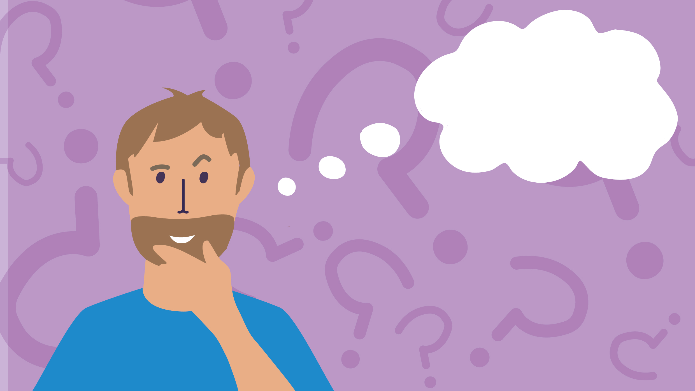
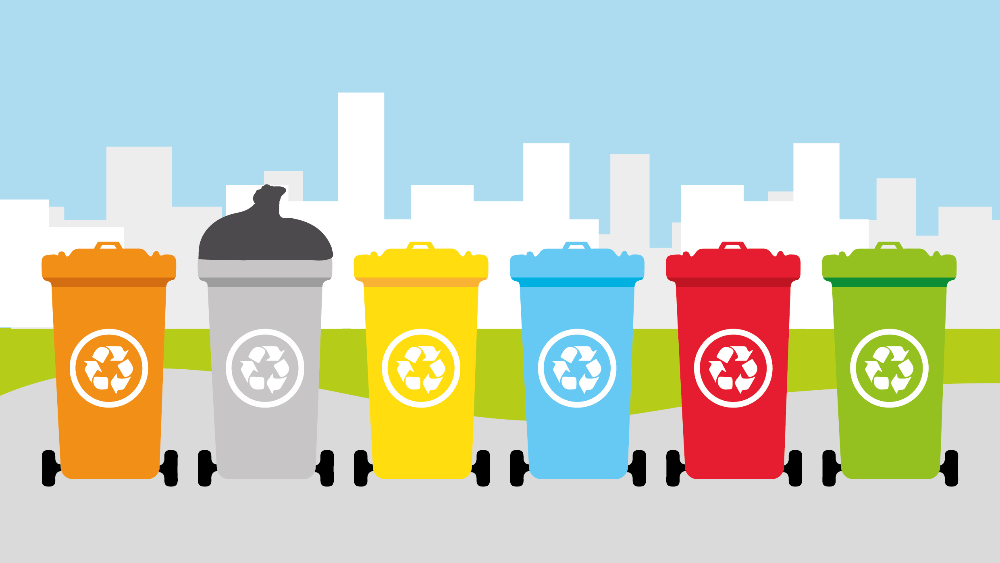

Conoce más
Residuos
En esta sección podrás aprender más acerca del impacto que tienen tus desechos en el planeta, así como alternativas y recomendaciones.
Ver más

¿Qué quieres aprender hoy?
Datos Curiosos
Aquí puedes ver datos curiosos sobre diferentes residuos y reciclaje. Igualmente encontrarás fechas relevantes y por qué se conmemoran.
Ver más